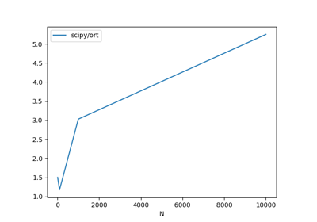
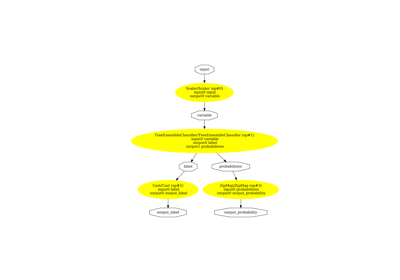

Gallery of examples¶



Compare CDist with scipy



Convert a pipeline with a XGBoost model
Convert a pipeline with a XGBoost model

Discrepencies with GaussianProcessorRegressor: use of double
Discrepencies with GaussianProcessorRegressor: use of double


When a custom model is neither a classifier nor a regressor (alternative)
When a custom model is neither a classifier nor a regressor (alternative)

When a custom model is neither a classifier nor a regressor
When a custom model is neither a classifier nor a regressor